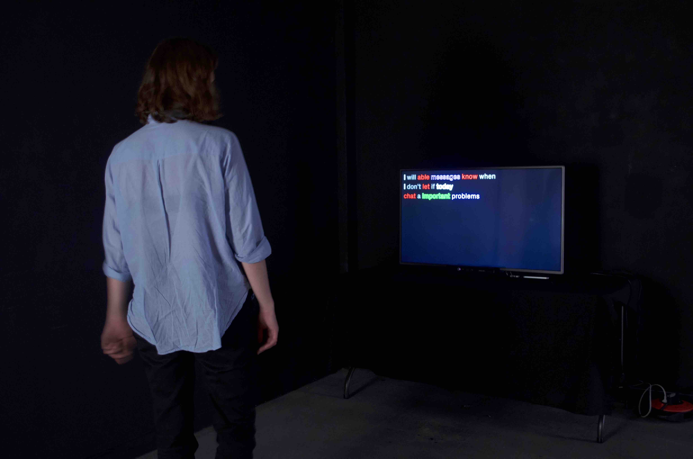
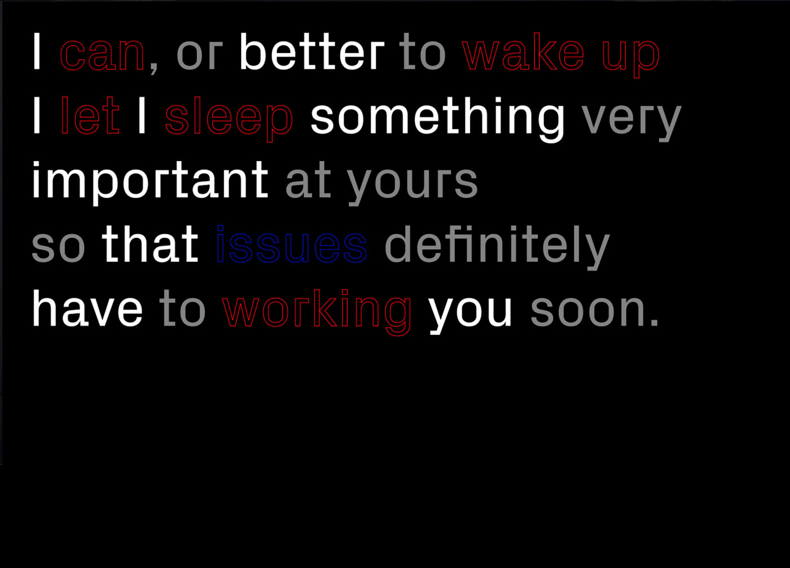
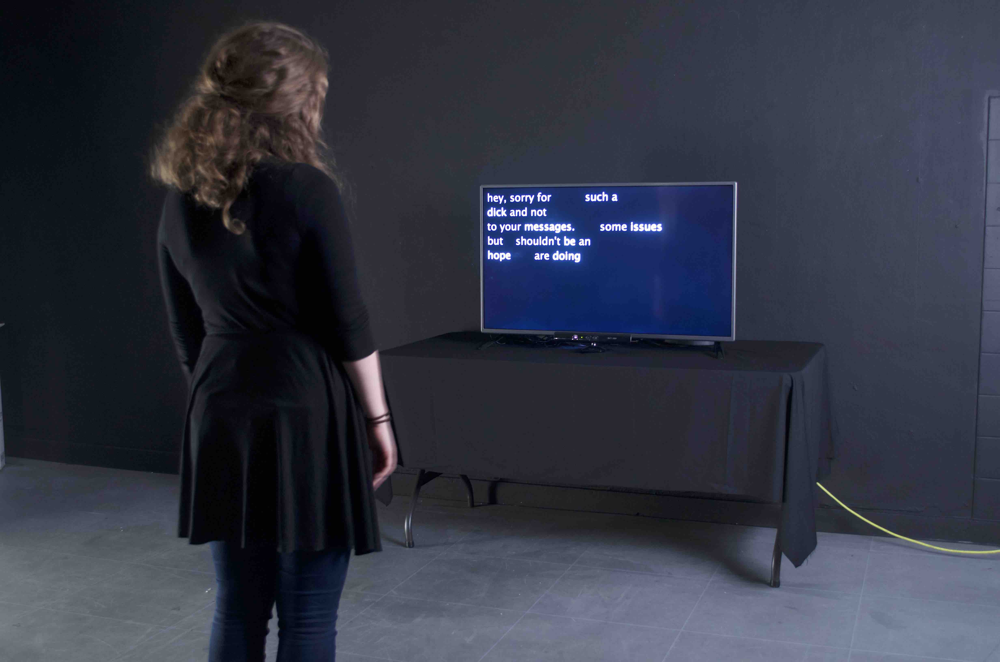

1/6

2/6

3/6

4/6

5/6

6/6

Internet, as a disembodied form of communication often assumed to be impersonal and untrustworthy. “Globalising intimacy” is an installation, visualising how the absence of physical proximity can create intimacy. It consists of 2 parts, showing the same personal chat messages on 2 screens simultaneously. The text becomes readable only when both spectators are looking at it while standing still. By movement, new messages are being generated.
Installation made with Processing.